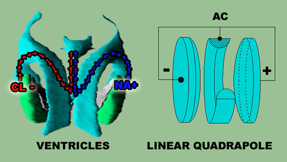
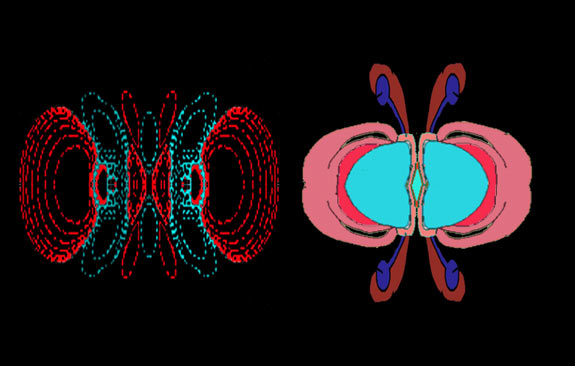
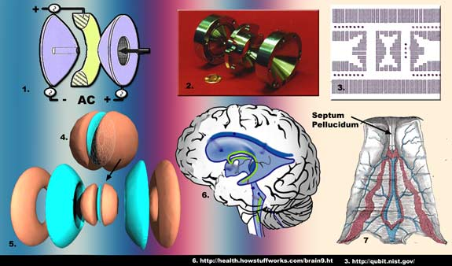
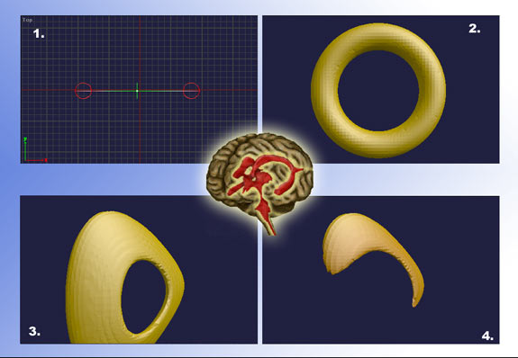
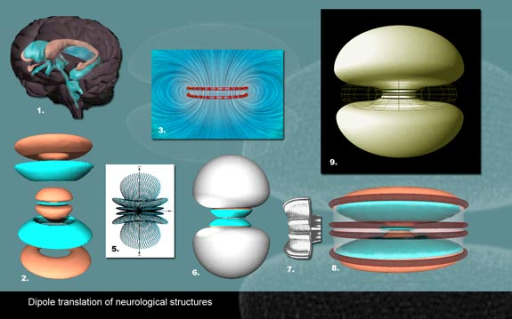
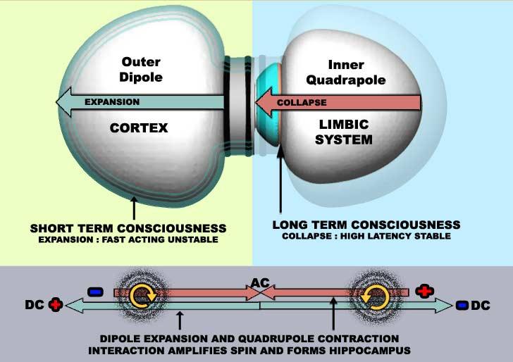
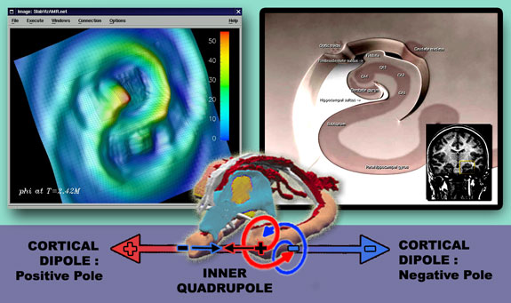
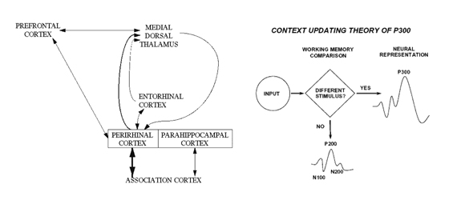
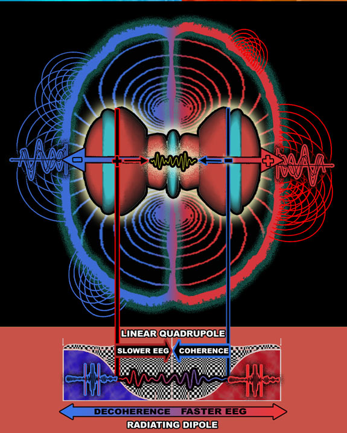

SECTION 6 : QUADRUPOLE STRUCTURES IN THE LIMBIC SYSTEM
SECTION ABSTRACT
The final bit of the brain puzzle, the limbic system is analysed and correlates well with a linear quadrupole. The inverse of a dipole. Further analysis of the limbic system with linear multipoles such as quadrupoles are looked at in greater detail.
Linear Quadrupoles fire centrolineally to it’s midline and are used for atomic clocks generation. The limbic system’s alternating wave EEG clocks, theta and delta are proposed to arise from the AC structures which would occur at the midline of the quadrupole structure, where the ventricles meet is involved in theta generation, one of the brain’s two governing clocks. The other alpha wave is generated also in the thalamus at the brains midline. Also the midline of quadrupoles is used for spectral measurement and analysis of small components. Computational analysis of the thalamus find’s that it performs spectral measurement of incoming information for compression.
The limbic system is taken apart in a 3d modeller and rebuilt as a linear multipole. This multipole model is put back in context with the outer brain dipole to get a greater idea how the whole brain operates as system. Putting the dipole and quadrupole together creates an area of “twist” where the two systems interact which explains the hippocampus formation.
I attempt to bring together a more complete model of limbic/cortical function by studying the thalamocortical system, generator of alpha rhythm, with the septohippocampal system which generates theta. These two major systems operate together to generate the P300, a marker of perception and memory processes. John Aggleton’s combined model of these two system, along with John polich P300 model is used to make an initial proposal for cortical/multipole brain structure. The limbic system is proposed to operate as a harmonic oscillator entwined in a radiating cortex dipole. These are continually involved in a limbic collapse/ cortical expansion cycle.
FINAL PIECE OF THE PUZZLE
So far everything most of this research has focussed on the cortex, but obviously the limbic system had to be looked at. What electromagnetic structure could the limbic system be, and does this increase our understanding of the brain ?
The ventricles or subarachnoid space have proven to be the solution for unravelling the cortex in terms of where to find coherent charges, so I am putting these as a priority in the limbic system. The solution with the most visual and structural correlations to the ventricles is a linear quadrapole, which is interestingly the same structure being used as an ion trap in quantum computers. When looking at dissections of the limbic systems, nearly all its parts have smooth curves. These also correlate quite well with Quadrupoles

Correlation of ventricles with a basic linear quadrapole : Theory predicts charge difference at lateral ventricles choroids plexus. Sodium and chloride ions are produced here, which will have an effect on the polarization of neurotransmitters. Arrows indicate proposed flow of charged fluid, consistent with quadrapole: Even through the skull prevents the ventricles from completing their push to forming discs, the angle and shape of the remaining pieces is consistent with quadrupole structure
A linear quadrupole has an inwardly directed electromagnetic structure, due to it possessing alternating charge at it’s centre. This has almost reverse properties of a dipole. A dipole spreads its field out, while a linear quadrupole is centrolineal.. it directs its field towards its center. In the brain the quadrupoles centre is at the thalamus with the poles beginning at each hippocampus. The quadrupoles use in industry is a means of electromagnetic control, and physical co-ordination of ions. It’s no surprise to see the correlation, that the thalamus and hippocampus have such strong control of our senses and memory.

LEFT : As the Quadrupole structure becomes more complex each part can correspond to a facet of the limbic system. Although limbic structure is complex, convoluted by the skull, and biological agendas, it can still be accounted for with quadrupole patterns. Most of the structures of the limbic system have the smooth curves and circular rotations associated with linear quadrapoles
The poles of the brain quadrupole need to posess charge reversals of the cortical dipole, otherwise the inner quadrapole would push the cortex dipole away. Again the electromagnetic theory is consistent with brain structure. At the quadrupole centre the thalamus inputs and outputs are twisted contralaterally so they switch round to the functions of the cortex. The quadrapole and dipole poles meet at the hippocampus and temporal cortex. The attraction of opposite charges each heading in opposite directions, tugs each other into a twisted structure.

Spectrometers which do chemical analysis have quadrapole to trap ions using magnetic fields. (1 and 2. in fig above) are we building computers in the image of the brain ? hard to control quantum computations uses a quadrapole ion trap (3 in fig above) This is a spherical representation of the thalamus and third ventricle. (neuron matter areas are brown and ventricular blue) The thalamus is in the centre in between two lateral ventricles. (blue) On either side caudate nucleus has been fully rotated. (4 in fig above)
Looking at the real ventricles. (6 in figure above) The areas in green are choroids plexus of the lateral ventricles. These produce the electrolyte CSF fluid. Do the right and left lateral ventricles have different amounts of positive or negative ions ? No research could be found regarding this, although they are involved in Sodium and chloride ion production, producing quantities of sodium, bicarbonate and chlorine for CSF fluid homeostasis. And this CSF Enters Astrocytes at lateral ventricles choroids plexus (422b) Because of the amount of structurally lateralized brain content found in the brain content of receptors, neurotransmitters, neurons due to the charge distribution of the dipole. This theory predicts the same for the limbic system. That the ion content at lateral ventricles choroids plexus has a resultant effect on the neurochemistry of the area, and that alternating frequency occurs where the lateral ventricles meet. This is borne out by studying the septum, a thin membrane between the lateral ventricles. (7 in fig above)
SEPTUM AS THE BRAINS GOVERNING CLOCK
The Medial septum-diagonal band (MSDB) complex area plays a key role in brain wave generation of the theta rythmns.(581,583, 587, 589) implicated in attention and memory processes., (568 l, m ,n) The septohippocampal projection system is the origin of acetylcholine neurons which tune modulations throughout the limbic system (587)
Septum is vital the the brain. In cats the septum is a modulator of P300, (568a) . The P300' disappears after septal lesions (568b) and septal lesions inhbit information gathering. (568d) Electrode Stimulation of the septum between the two lateral ventricles induces orgasm. (568i) Also an incomplete septum results in serious brain disorders and epileptic seizures (568j, 568k)
The result of developing with no septum is severe :
“Absence of the septum pellucidum (ASP) is a rare disorder characterized by abnormal development of a thin membrane located at the midline of the brain. The disorder usually occurs with other cranial abnormalities. Individuals with ASP may experience vision impairment or blindness. They may also have coordination problems and hormone deficiencies that result in short stature. Intelligence is usually affected and learning disabilities are common. The disorder usually manifests early in life, often as a consequence of discovering other abnormalities. Symptoms include involuntary eye movements, a wasting of a part or parts of the body, and short stature. Seizures and inappropriate behavior may also occur.”
Considering that it is not part of the hypothalamus and not connected to physical function, why would a small area like the septum be so vital to cognition ? All that marks it out, is that it is a thin membrane separating the two lateral ventricles. Looking at the limbic system predicted that it’s structure would be centrolineal tending towards an alternating current at as the lateral ventricles meet. This is exactly what is found at the septum. A centre for oscillations, Theta which is constant and dominate EEG to control and co-ordinate the entire brains thinking activity.
“It has been speculated that synchronous firing of neurons involved in working memory oscillate with frequencies in the theta band (4 to 8 Hz). Indeed, the power of theta frequency in the EEG increases with working memory load [47], and oscillations in the theta band measured over different parts of the skull become more coordinated when the person tries to remember the binding between two components of information [48].” (565a)
SPHERICAL BRAIN MODELLING.
As you will notice in the diagram above I have started using quadrapole shapes to represent brain parts. In exploring visual evidence (LINK) I try to show how electromagnetism is trying to fulfil it’s natural dipole type shapes, in spite of the challenges of being inside a skull, and having all kinds of old non-dipole bits attached or running through it. Whatever structure is proposed for the limbic system will require modelling. As it would take a lot of computation to twist and shear these models to look like a brain. I will take a basic dipole shape like a toroid, and show what happens when squashed and sheared. When a toroid undergoes a simple force such as inward pull from the centre due to electromagnetic force along one axis, it becomes flatter and concave. Because there is such a large gap for the skulls eye throat and jaw region, the electromagnetic forces within the it still have to move somewhere, so they move back. This explains the horns of the third ventricles.

The basic toroid shape in a 3d modeller. (1 and 2. in fig above) is given a basic shear command which tugs the structure from below (3. in fig above). A pull like this would occur when a toroid is pulled from the central axis in a normal quadrapole. The model then has the area subtracted where the Jaw and spinal column occupy and allow no space, resulting in an area resembling the right lateral ventricle.
REBUILDING A SPHERICAL BRAIN
It’s now possible using the 3d modeller to build a complete spherical brain which accounts for all major neurology, using only the basic dipole, quadrapole components of toroids, toroids sheared to inverted lobes, hourglass isotrope structures (isotropes are standard symmetrical hourglass dipole shapes) and sheared hourglass isotropes which look simiar to pairs of sheared toroids, but are joined.

(1 in fig above) The basic brain limbic system. This is compromised from its natural electromagnetic shapes by skull constraints. (2 in fig above) This stack of shapes is an exploded view of the previously shown limbic system. At the very centre is a flattened toroid (blue) which is the central 3rd ventricle. Running through the centre of this and on either side is a compressed hourglass isotrope forming the thalamus (brown). Surrounding that the lateral ventricles (blue) which are sheared toroids. Fitting into the ventricles a complete Caudate nucleus, a sheared toroid (brown). (5 in fig above) A reminder of a similar linear quadrapole structure. This image is taken from a standard simulation of a radio Dipole antenna, illustrating both the hourglass and the effect of shear compression when multiple isotropes occupy the same space. (6 in fig above) Back to rebuilding the brain, the limbic region from fig 2 is reassembled and enclosed within the white matter axons running from the thalamus, through the caudate nucleus forming an hourglass shape (white in fig) . Limitations of the modelling system used here need to be allowed for. Globus Pallidus has been left out. The fully curved details of outer grey matter are also absent. (3 in fig above) This is a simulation from MIT which shows an inside view of toroid and field lines. These are quite common engineering mockups. (7 in fig above) A reminder of what a section of the indusium griseum looks like. This is in fact the other side of the hippocampus and runs these toroid like tubes round the corpus Callosum (in a real brain). (8 in fig above) For the purpose of modelling a spherical brain, the hippocampus piece which winds into the temporal lobe will be removed and replaced by a complete set of toroids surrounding a now tube like Corpus Callosum. (9 in fig above) A complete brain widened in the centre. To reveal the usually hidden longitudinal fissure. The white matter from the corpus callosum is now wrapped round the proposed inner limbic system isotrope modelled previously. (6 in fig above)
THE FINAL MODEL : COLLAPSE AND EXPANSION

Above : The final result, Inner and outer structures together. Left side shows outer dipole, right side shows inner quadrapole. Each has a charge different to its own hemisphere counterpart (so the left quadrapole would be positive and the left dipole negative. BOTTOM linear Quadrapole inside dipole meets at the hippocampus. The opposing charges twisting the structure into a highly critical part of the brain.
Is this the electromagnetic structure of the brain ? A linear Quadrapole within a dipole Each has its own memory system. The outer isotrope, a conventional dipole moves outwardly to be surrounded by a fluid chaotic system in a state of expansion. It’s memory temporary and outwardly radiating. The inner quadrapole moves inwardly to produce highly ordered dense structures, a result of constant inward pull. Its memory permanent and locked inside.
HIPPOCAMPUS EXCITABILITY
The hippocampus which sits right along a choroids plexus, and tends towards a high degree of magnetite content, (414) is marked out by it’s tendency towards epilepsy where spikes can rise to 600hz and in normal function produces high frequency ripples of between 100-300hz (575), correlated to electrotonic activity. (575,574,573a)
This dipole/quadrupole approach proposes that the hippocampus twists into the cortex as a result of opposing charges between the entorhinal cortex which has a neurochemical distribution that correlates with an overall negative or hyper-polarizing tendency and the hippocampus which has an overall positive or depolarizing tendency. Each system, the dipole and quadrupoles charges are structurally moving in opposing directions from each other, but exist on the same axis, with charges that attract. The result is a spiral of intensely wound and dense neural activity of mixed charge.

A more detailed look at hippocampus structure. LEFT : This is a computer simulation of two neutron stars, essentially two dipole systems with their own trajectory. RIGHT : Similiar double twist structure in hippocampus, also proposed to be caused by two dipole systems with their own trajectory. BOTTOM :Each hippocampus left and right is proposed to be formed by two seperated dipole systems with their own opposite trajectory. In diagram above left hippocampus (brown in bottom diagram) is located alongside the left choroid plexus, (Dark red in bottom diagram) where ion prouction is prominent and proposed to produce positive charges, (greater levels of Na+) and heading towards the inner third ventricle. Against this travelling outwards is the cortex dipoles negative pole. So at this point, (the entohrinal cortex), two seperate dipoles with opposite trajectory get caught up with each other and their opposite charges pull towards each other.
THALAMO CORTICAL
Finally If we are to make a serious attempt at proposing a dipole model then it must be put together with in depth analysis of thalamo-cortical system and the EEG involved. In Section 5 I investigated the thalamocortical relationship and p300. Now it is going to be investigated further to see if it helps explain a dipole / Quadrupole interaction.
The Thalamocortical realtionship is defined as Oscillation-Assisted Processing Where sensory input modulates self generated cortical activity (424x). In systems term the cortex is random and chaotic (424u) with the thalamus in the control seat regulating cortico-cortico processes. Thalamocortical inputs trigger a propagating envelope of gamma-band activity in auditory cortex in while thalamic matrix nuclei are most strongly driven by corticothalamic feedback (424x)
In the view of Crick and Koch controlled randomness is an appropriate mode of processing. “It is better to achieve a rapid but occasionally imperfect performance instead of more prolonged one that always produces a perfect result.” (424u)
The thalamus controls the cortex through Alpha waves. “Alpha waves are electromagnetic oscillations in the frequency range of 8–12 Hz arising from synchronous and coherent (in phase / constructive) electrical activity of thalamic pacemaker cells in the human brain” (589) Sensory input from the thalamus to cortex propagates gamma waves, local synchronized bursts of activity that form transient neural assemblies which contribute to auditory information processing (424w)
What happen next can be measured by Event related potential (ERP)
“Event Related Potentials (ERP) is any stereotyped electrophysiological response to an internal or external stimulus. More simply it is any measured brain response that is directly the result of a thought or perception.” Wiki (ERP)
What is the Event related potential ? Researchers have found it to be a combination of very different processes and brain areas involved.
Additive i.e. a superposition. (411c)With each addition of evoked cortical low gamma activity leading to "desynchronization” the Event related desynchronization, (ERD) a reduction of fast non-phase-locked oscillations (402). A “decrease in coherence across space” (5751) Alpha (ERS) suppression, or deactivation (402) In other words there is an increasing divergence away from a coherent thalamic entrained signal as more cortical areas are activated by stimulus.
ERD onset is positively associated with P300 latency – and negatively associated with P300 amplitude (402) In other words faster increases in superpositional cortical activation, lead to quicker and higher power ERP’s. Lower latency ERP’s such as P1-N1 (100ms) complex are due to the superposition of cortical evoked oscillations. (411c) while higher latency N400 (400ms) is initially associated with Thalamic generated Alpha wave phase reset, (402, 575a) without power increase (411d) Phase resetting the other process involved in ERP generation is common to non-linear oscillatory systems in response to a perturbation (401b3)
P300 precedes ERD and predicted individual variance of both slow and fast alpha ERD. P300 and ERD are related such that slow and fast alpha ERDs are specifically guided or modified by the internal event(s) indexed by P300. (401c) ERD could therefore index the effects of cognitive operations on alpha activity power and frequency (402)
At this stage here is summary of ERP’s function.
“Our results on ERPs agree with the data of Sergent et al. (2005), which suggests that ERPs evoked by perceived and unperceived stimuli start to diverge around 270 ms. Interestingly, these ERP differences occur only after the end of the transient increase in phase synchrony. Thus, it seems as if the fast and transient large-scale synchronization enhances the saliency of the activation patterns sufficiently to permit access to consciousness and thereby triggers a sequence of processes such as perception stabilization, maintenance in working memory, and generation of expectancies that are associated with conscious awareness” (408a)]

Current Models by Aggleton Left and Polich Right which will be integrated later into the dipole neurology analysis : LEFT : Aggleton : diagram of the principal pathways underlying the detection of item familiarity. Thalamocortical and hippocampal cortical. Both Synchronise their clocks, Alpha and theta working in unison help generate P300. RIGHT: Polich model of P300. When salient inputs occur P300 is generated if not lower span non hippocampal ERPS’s are generated.
One component of the ERP P300 is phase-locked delta (402) which is corticothalamic feedback (424v) As cortical activation increases corticalthalamic feedback may increase. As The P300 is accompanied by Alpha phase reset (411d) and Alpha wave phase reset Contributes to the Generation of ERPs (, 402, 575a) it could be hypothesized that this reset occurs due to the corticothalamic input. The thalamic nuclei targeted by corticothalamic input are matrix relay, as one function of this pattern is to synchronize fast cortical oscillations via the matrix projections back to cortex.(424x) The limbic / cortical relationship cycle, here appears to be sensory input leads to cortical expansion and superposition. The resulting decoherence increases corticothalamic feedback, with a reciprocal thalamic alpha phase relocking.
This control of superpositioned wave activity is what generates the P300, however the P300 is composed of both phase-locked delta and theta-range synchronized oscillations (402) A composition of Theta / delta locked oscillations mean that the septohippocampal system is working in conjunction with the corticothalamic system.
SEPTOHIPPOCAMPAL AND THETA GENERATION
The Medial septum-diagonal band (MSDB) complex area plays a key role in brain wave generation of the theta rythmns.(581,583, 587,) implicated in spatial cognition, attention and memory processes., (568 l, m ,n) The septohippocampal projection system is the origin of acetylcholine neurons which tune modulations throughout the limbic system (587)
In cats the septum is a modulator of P300, (568a) . The P300' disappears after septal lesions (568b) and septal lesions inhbit information gathering. (568d) What occurs at P300 when the thalamocortical / and hippocampal cortical processes work in unison ? The Theta / Alpha synchronization between these two systems is responsible for the regularity of conscious perception and it’s integration with memory (401b, 411c)
“consciously perceived stimuli (p300) give rise to a cascade of processes that have distinct electrophysiological signatures.
(1) an early and global phase-locking of gamma oscillations,
(2) an enhancement of a P3a-like component of the ERP and of sustained theta oscillations over frontal areas that are likely to reflect transfer and maintenance of the perceived stimuli in working memory, and
(3) an enhancement of power and phase-locking of gamma oscillations before test stimulus presentation that may be a correlate of the anticipation of the matching between short-term memory contents and sensory input.”
WHAT HAPPENS AT P300 ?
The P300 is a synchronized composite signal. Which marks the introduction of the hippocampus into recognition of thalamocortical input. At the point of P300 it is proposed the thalamus collapses the superposition with alpha wave reset. (402, 575a) and as mentioned previously (LINK) decomposes the spectrum of cortical oscillations before decoherence. The P300 collapse happens at the point just before these cortical superpositions, propagate enough to become decoherent through Event related Desynchronisation (ERD) (402)
PUTTING AT ALL TOGETHER
The point of investigating EEG, thalamcortical and Septohippocamal processes to this degree is to gain and understanding of high level brain research, and see if it contracts the Brain mutipole model. Like most of the areas researched, more and more questions are answered by this model, because if the brain structure is defined accurately then any process and content of the brain should face little problem when put into a brain multipole. If my model was wrong, it would have been impossible for me to do the work that I have done.

From the view of the Quadrupole collapse / Dipole expansion model above. (Quadrupole is the shape with the arrows on its axis) Everything here translates well with the previously investigated neuroscience. A quadrupole is centrolineal, it’s products such as thalamus and hippocampus drive linear processes towards the centre where they synchronise into AC waves or phase locked combinations of their respective Theta, Delta and Alpha waves. (middle wave in yellow, and also at bottom middle of diagram) The Quadrupole’s phase locking enforces coherence and co-ordinates brain activity with repeated synchronization signals.
Weiss (who summarized a lot of previous research) correlates IQ with increased harmonic muiltipication up to 29hz.(426) as well as Nunez finding harmonic components in alpha (700) altering in response to halothane anesthetic. (p232,298) This explains a lot about the limbic Quadrupole. linear multipoles like Quadrupoles structures being fixed and firing from poles to midline, are natural periodic harmonic oscillators. Linear multipoles are defined mathematically and visually by spherical harmonics. As was shown here, the limbic system mirrors nicely into such structures visually. In function also, with the continual phase locking amongst the lower EEG signals being unique to that brain area and not being reflected in the activities above 30hz where cortical EEG which does quite the opposite, purely amplifiying inputs into noisy overdrive.
In the cortex it is proposed that gamma oscillations only evolved due to potentials hitting the surface of the brain and being driven back down to meet the inhibitory thalamocortical matrix projections (426a4b). That is if the cortex were not sealed there would be no gamma oscillation. It is entirely a radiative structure. Nunez a respected neuroscientist in eeg has proposed that the cortex can best be understood in terms of wave like activity at the brain surface, inducing standing waves.(330) To summarize, this supports the view that all coherent brain oscillation originate from or is dictated by the limbic quadrupole, with the remaining cortical gamma oscillations, are explained by chaotic feedback (653a), due to it being a dissipitave dipole, enclosed within a skull.
DIPOLE / QUADRUPOLE SUMMARY
The cortical Dipole (dark red/blue in the image above) poles are the reverse of the Quadrupoles, due to it’s contralateral structure. The dipole is dissipative disordered quickly propogating multiple superpositions of gamma waves which tend to decoherence, and wave activity, towards it’s poles and beyond into the proposed cortical ferrofluid. The thalamocortical and septohippocampal systems sync together making a complete working brain system, which can be measured by the P300 in which A quick reacting and expansive cortex is continually pulled back from the brink of chaos by a thalamus which compresses the result of these cortical superpositional sensory processes into matrix eigenvalues, and a hippocampus which indexes the sensory input for memory comparison.
These two systems fit together in constant flux like an intertwined couple. A system of opposites far more opposite and in harmony than either the cortex or limbic system alone. They push and pull each other, Expanding and collapsing each others quantum and classical "style" processing agendas. Different researchers point out (700,705,424u) that the differences between cortical and thalamic EEG are linear and non linear respectively, and that having the right balance between these two systems is an essential part of succesfull brain function (705,424u,424q)
The outwards flowing structure of the cortex tends towards expansion, chaos, non linearity and environmental interaction spawning ripples and wave packets at it’s surface. The limbic system is the converse with an inward directing collapsing structure that tends towards linearity, order and control of the cortex through repeated alternating phase locking signals that originate where the two inner ventricles join together. This Expand / Collapse interaction is essential if the brains full computational processes are to be understood
Section 6 summary
PROBLEM
Theory predicts entire brain structure is electromagnetic, so the limbic system must also have a mutipole correlate. Also limbic / cortical process are such reversals of each other from each other, (more so than dipole reversals) That the multipole correlate has to reflect this.
PROPOSAL
Brain ventricles at neural crest are a basic factor in brain structure, it is proposed that they will help understand inner brain.The limbic system itself is proposed to have complex linear multipole structures which manifest themselves from the basic ventricle quadrupole structure. A quadrupole is centrolineal, it’s products such as thalamus and hippocampus drive linear processes towards the centre where they synchronise into AC waves or phase locked combinations of their respective Theta, Delta and Alpha waves. The Quadrupole’s phase locking enforces coherence and co-ordinates brain activity with repeated synchronization signals.
This explains a lot about the limbic Quadrupole. linear multipoles like Quadrupoles structures being fixed and firing from poles to midline, are natural periodic harmonic oscillators.
all coherent brain oscillation originate from or is dictated by the limbic quadrupole, with the remaining cortical gamma oscillations, explained by chaotic feedback (653a), due to it being a dissipitave dipole, enclosed within a skull.
DIPOLE / QUADRUPOLE INTGRATION
The inner quadrapole moves inwardly to produce highly ordered dense structures, a result of constant inward pull. The outer isotrope, a conventional electric dipole moves outwardly to be surrounded by a fluid chaotic system in a state of expansion. It’s processes fast acting temporary and outwardly radiating. The two work together and support consciousness due to their inverse relationship with each other.
The Dipole poles are reverse of the Quadrupoles, due to it’s contralateral structure. The dipole is dissipative disordered quickly propogating multiple superpositions of gamma waves which tend to decoherence, and towards it’s poles and beyond into the proposed cortical ferrofluid. The thalamocortical and septohippocampal systems sync together making a complete working brain system, which can be measured by the P300 in which A quick reacting and expansive cortex is continually pulled back from the brink of chaos by a thalamus which compresses the result of these cortical superpositional sensory processes into matrix eigenvlaues, and a hippocampus which indexes the sensory input for memory comparison.
P300
P300 represents the coming together of all brain areas (outer and inner) (408a) proposed to be at some kind of balance point between inner quadrupole and outer dipole. Later Event related potentials after P300 have greater amounts of thalamic alpha rephasing, and earlier components greater amounts of cortical desynchronisation.
The thalamocortical and septohippocampal systems sync together making a complete working inner brain system, (caudate nucleus is important but not vital to this model) At the point of P300 it is proposed the thalamus measures the superposition with alpha wave reset. (402, 575a) and as mentioned decomposes the spectrum of cortical oscillations before decoherence. The P300 collapse happens at the point just before these cortical superpositions, propagate enough to become decoherent through Event related Desynchronisation (ERD) (402)
POINTS
Ventricles with choroids plexus have shape and structural similarities to linear quadrupoles, which have a reverse structure to the cortical dipole. Poles fire into centre forming stable alternating EMF states at the midline. Limbic system structures when mirrored (getting rid of jaw and skull compression) are also similar to linear multipole structures.
A limbic Quadrupole inside a cortical dipole would need reverse polarity otherwise the two systems would push each other apart. This is consistent with contralateral cortex.
When spherically adjusted for skull compression, the entire limbic system can be built from linear multipole patterns.
Hippocamus is where limbic quadrupole meets cortical dipole. S shaped twisting structure is exactly similar to two interacting dipoles. Because quadrupole is compromised of two dipoles, one at each hippocampus, interacting with each pole of the cortical dipole
Brains regular eeg, alpha and theta, which clock the brain (589)through rephasing, are produced at the midpoint of the quadrupole structure. Quadrupole midpoints are ion traps used for atomic clocks.
Weiss (who summarized a lot of previous research) correlates IQ with increased harmonic muiltipication up to 29hz.(426) as well as Nunez finding harmonic components in alpha (700) altering in response to halothane anesthetic. (p232,298)
The P300 is composed of both phase-locked delta and theta-range synchronized oscillations (402) A composition of Theta / delta locked oscillations mean that the septohippocampal system is working in conjunction with the corticothalamic system.
Linear multipoles are defined mathematically and visually by spherical harmonics. As was shown here, the limbic system mirrors nicely into such structures visually. In function also, with the continual phase locking amongst the lower EEG signals being unique to that brain area and not being reflected in the activities above 30hz where cortical EEG which does quite the opposite.
The Theta / Alpha synchronization between these two systems is responsible for the regularity of conscious perception and it’s integration with memory (401b, 411c)
INTEGRATED
Crick and Koch (controlled randomness / Thalamocortical relationship)
Aggleton (brings together thalamocortical and septohippocampal)
Polich (P300 marks important point for brain areas to work together)
Nunez (cortical wave spreading, linear thalamic, nonlinear cortical)
Freeman (cortical feedback,653a).
REFERENCES
330 see 700 (p330)
700 Nunez P, Srinivasan R. Electric Fields of the Brain. First Edition 1981:330-332.
401b Gruber WR, Klimesch W, Sauseng P, Doppelmayr M. Alpha Phase Synchronization Predicts P1 and N1 Latency and Amplitude Size. Cereb Cortex 2005;15(4):371-7.
401b3 Brandt ME. Visual and auditory evoked phase resetting of the alpha EEG. Int J Psychophysiol 1997;26(1-3):285-98.
401c Yordanova J, Kolev V, Polich J. P300 and alpha event-related desynchronization (ERD). Psychophysiology 2001;38(1):143-52.
402 Polich J. Updating P300: an integrative theory of P3a and P3b. Clin Neurophysiol 2007;118(10):2128-48.
408a Melloni L, Molina C, Pena M, Torres D, Singer W, Rodriguez E. Synchronization of neural activity across cortical areas correlates with conscious perception. J Neurosci 2007;27(11):2858-65.
411c Klimesch W, Schack B, Schabus M et al. Phase-locked alpha and theta oscillations generate the P1–N1 complex and are related to memory performance. Brain Res Cogn Brain Res. 2004;19(3):302-16.
411d Fell J, Dietl T, Grunwald T et al. Neural bases of cognitive ERPs: more than phase reset. J Cogn Neurosci 2004;16(9):1595-604.
414 Quintana C, Bellefqih S, Laval JY et al. Study of the localization of iron, ferritin, and hemosiderin in Alzheimer's disease hippocampus by analytical microscopy at the subcellular level. J Struct Biol 2006;153(1):42-54.
422b Guyton, Hall. Guytan’s Textbook of Physiology. 2000.
424q Cytowic RE. Synesthesia: Phenomenology And Neuropsychology. PSYCHE 1995; 2(10)
424s Aggleton JP, Brown MW. Episodic memory, amnesia, and the hippocampal-anterior thalamic axis. Behav Brain Sci 1999;22(3):425-44.
424u Crick F, Koch C. A framework for consciousness. Nat Neurosci 2003;6(2):119-26.
424v Bazhenov M, Timofeev I. Thalamocortical oscillations. http://www.scholarpedia.org/article/Thalamocortical_oscillations 2006. 30/11/2008.
424x Granger RH, Hearn RA. Models of thalamocortical system. http://www.scholarpedia.org/article/Models_of_thalamocortical_system#Oscillation-Assisted_Processing 2007. 30/11/2008.
424w Metherate R, Cruikshank SJ. Thalamocortical inputs trigger a propagating envelope of gamma-band activity in auditory cortex in vitro. Exp Brain Res 1999;126(2):160-74.
426 Weiss V. The relationship between short-term memory capacity and EEG power spectral density. Biol Cybern 1992;68(2):165-72.
426a4b Jones EG. The thalamic matrix and thalamocortical synchrony. Trends Neurosci 2001;24(10):595-601.
565a Working memory From Wikipedia, the free encyclopedia. http://en.wikipedia.org/wiki/Working_Memory#Localizing_working_memory_functions 2008.
568a Harrison JB, Buchwald JS, Kaga K, Woolf NJ, Butcher LL. 'Cat P300' disappears after septal lesions. Electroencephalogr Clin Neurophysiol 1988;69(1):55-64.
568b Apartis E, Poindessous-Jazat FR, Lamour YA, Bassant MH. Loss of rhythmically bursting neurons in rat medial septum following selective lesion of septohippocampal cholinergic system. J Neurophysiol 1998;79(4):1633-42.
568d Ikonen S. The role of the septohippocampal cholinergic system in cognitive functions. http://www.uku.fi/neuro/54the.htm 2001. 30/11/2008.
568i Scott AC, Science, Mind, and Society. http://eebweb.arizona.edu/faculty/Winfree/O.html 1999. 30/11/2008.
568j Wishart TB, Bland BH, Vanderwolf CH, Altman JL. Electroencephalographic correlates of behaviors elicited by electrical stimulation of the septum: seizure induced feeding. Behav Biol 1973;9(6):763-9.
568k Sanchez O, Nastasi J, Escalona J, Guerra D. Two male siblings with cavum septum pellucidum, cavum vergae, macrocephaly, seizures and mental retardation. A new hereditary syndrome? Clin Dysmorphol 1997;6(2):129-32.
568l NOT AVAILABLE
568m Vinogradova OS, Kitchigina VF, Zenchenko CI. Pacemaker neurons of the forebrain medical septal area and theta rhythm of the hippocampus. Membr Cell Biol 1998;11(6):715-25.
568n Wang XJ. Pacemaker neurons for the theta rhythm and their synchronization in the septohippocampal reciprocal loop. J Neurophysiol 2002;87(2):889-900.
573a Dickson CT, Magistretti J, Shalinsky M, Hamam B, Alonso A. Oscillatory activity in entorhinal neurons and circuits. Mechanisms and function. Ann N Y Acad Sci 2000;911:127-50.
574 Heinemann U. Role of sharp wave ripple complexes and activation of the EC layer III pathway in memory consolidation. http://www.charite.de/ch/physio/neuro/GRK1123/Templates/ag-heinemann.htm 30/11/2008.
575 Traub RD, Schmitz D, Jefferys JG, Draguhn A. High-frequency population oscillations are predicted to occur in hippocampal pyramidal neuronal networks interconnected by axoaxonal gap junctions. Neuroscience 1999;92(2):407-26.
5751 Edwards E, Soltani M, Deouell LY, Berger MS, Knight RT. High gamma activity in response to deviant auditory stimuli recorded directly from human cortex. J Neurophysiol 2005;94(6):4269-80
575a Hanslmayr S, Klimesch W, Sauseng P. Alpha phase Reset Contributes to the Generation of ERPs. Cereb Cortex 2007;17(1):1-8.
581 Ujfalussy B, Kiss T, Hajos M, Erdi P. Theta synchronization in the medial septum and the role of the recurrent connections. http://geza.kzoo.edu/~ubi/publications/CNSpos.pdf 30/11/2008.
583 Sotty F, Danik M, Manseau F, Laplante F, Quirion R, Williams S. Distinct electrophysiological properties of glutamatergic, cholinergic and GABAergic rat septohippocampal neurons: novel implications for hippocampal rhythmicity. J Physiol 2003;551(Pt 3):927-43.
587 Lawrence JJ, Grinspan ZM, Statland JM, McBain CJ. Muscarinic receptor activation tunes mouse stratum oriens interneurones to amplify spike reliability. J Physiol 2006;571(Pt 3):555-62.
588 see 568n
588b Kocsis B, Li S. In vivo contribution of h-channels in the septal pacemaker to theta rhythm generation. Eur J Neurosci 2004;20(8):2149-58.
589 Brazier M. The Electrical Activity of the Nervous System 1980.
653a Freeman WJ. Tutorial on neurobiology: from single neurons to brain chaos. International Journal of Bifurcation & Chaos 1992;2(3):451-82.
655 Rizi RR, Ahn S, Alsop DC. Intermolecular zero-quantum coherence imaging of the human brain. Magn Reson Med 2000;43(5):627-32.
700(p232-298) Nunez P, Srinivasan R. Electric Fields of the Brain. First Edition1981:330-332.
705 Anokhin AP, Lutzenberger W, Birbaumer N. Spatiotemporal organization of brain dynamics and intelligence: an EEG study in adolescents. Int J Psychophysiol 1999;33(3):259-73.
|